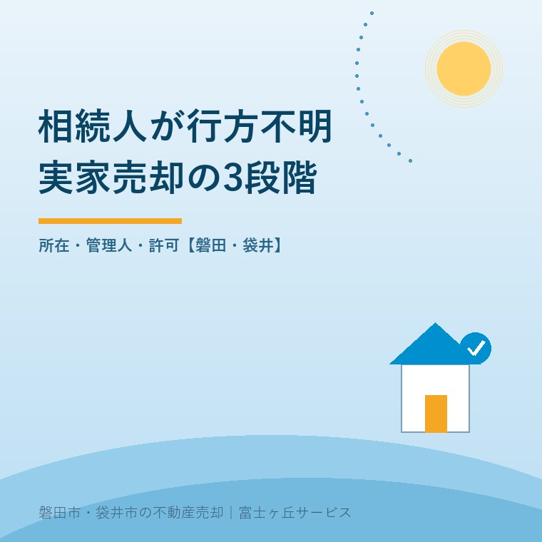
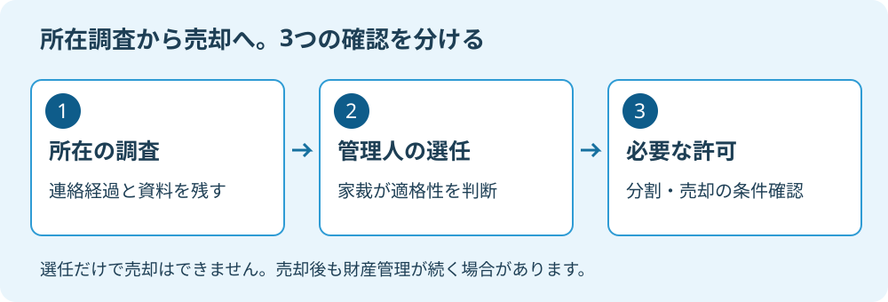

相続人が行方不明｜実家売却の3段階
2026年9月13日｜カテゴリ：相続・実家売却

この記事の要点
Q. 相続人の一人が行方不明でも、実家を売れますか。
売却できる場合があります。所在調査を行い、必要なら不在者財産管理人を選任し、遺産分割・売却に必要な家庭裁判所の許可を確認します。選任だけで自由に売れるわけではありません。磐田市・袋井市・森町では、介護施設の運営から不動産事業を始めた富士ヶ丘サービスのような地域密着の会社に、資料整理から相談する選択肢があります。
実家を売る方向で家族の話がまとまっても、相続人の一人の所在が分からなければ、手続はそこで止まります。連絡できる家族だけで話を進めたくなる気持ちは理解できます。しかし、売却の段取りと、その人の権利を外してよいかは別の話です。
大石浩之（磐田市／不動産業）です。宅地建物取引士として私は、査定額より先に「誰が契約できる状態か」を整理すべきだと考えます。本記事は、不在者財産管理人を利用する場合の道筋です。すべての所在不明案件が同じ手続で解けるという意味ではありません。
第1段階は所在調査。無返答と行方不明を分ける
所在調査では、相続人の住所・居所が分からない状態と、住所は分かるが返事がない状態を分けます。裁判所の案内は、従来の住所や居所を去り、容易に戻る見込みのない人について、財産管理人がいない場合などを対象にしています。
まず家族が持っている住所、最後に連絡できた日、郵便の返送、親族への照会結果を一枚にします。戸籍と戸籍の附票は、親族関係や住所の履歴を確かめるための資料です。誰でも無制限に取得できるわけではないため、請求資格や必要な範囲は窓口や専門家へ確かめます。
私なら「何年も会っていない」という説明を、そのまま申立ての根拠にはしません。いつ、どの住所へ、誰が連絡したのか。分かっている事実と、家族の推測を別の欄に置きます。住所が分かって話合いを拒んでいるなら、別の法的手続の検討になるためです。
共有名義の家全体を売る話と、自分の持分だけの処分も混ぜないでください。家全体の売却に向けた合意の入口は、実家を共有名義にした場合の確認事項で整理しています。所在調査や相続人の確定の個別判断は、専門家に確認を。

第2段階は管理人選任。実家の所在地だけで申立先を決めない
不在者財産管理人の選任は、不在者の従来の住所地または居所地の家庭裁判所へ申し立てます。裁判所の案内では、利害関係人や検察官が申立人となります。実家が磐田市にあるからといって、実家の所在地だけで窓口を決める手続ではありません。
管理人は、連絡できる家族の代わりに売却を急ぐ人ではなく、不在者の財産を守る人です。裁判所は不在者との関係や利害関係などから適格性を判断し、弁護士や司法書士などが選ばれる場合もあります。家族が候補者を挙げれば必ず選ばれる、とは考えないでください。
| 整理する束 | 主な資料 | 確認すること |
|---|---|---|
| 人と所在 | 戸籍、附票、連絡経過 | 親族関係と不在の裏付け |
| 財産 | 登記事項証明書、預貯金資料 | 何を管理する必要があるか |
| 申立ての立場 | 利害関係を示す資料 | 申立資格と候補者の関係 |
裁判所の標準的な添付書類は出発点です。審理のために追加資料を求められることもあります。家族が全員で同じ戸籍を取り直す前に、収集済みの資料と不足分を分けると、重複する手間を減らせます。
不在者がいる場合と、相続人の存在・不存在が明らかでない場合は制度を取り違えないこと。後者は相続財産清算人を通じた実家売却の話です。「連絡が取れないから相続人はいない」とは扱えません。
第3段階は許可。売値だけでなく分け方も確かめる
遺産分割や不在者の不動産売却は、通常の保存・管理の権限を超える行為です。裁判所の案内では、別に「権限外行為許可」が必要とされています。家族で遺産の分け方を決める協議と、買主への売却は、確認すべき行為を分けます。
管理人が参加する遺産分割の結果、誰が家を取得するのか。それとも不在者の持分を含めて売るのか。名義と分割案で、売買に関わる人や許可の確認範囲は変わります。「管理人選任、次は売買契約」という二つの箱だけで予定を作ると、この間が抜けます。
私は、許可を求める準備として、価格の根拠と売却条件をセットにするよう提案します。査定額だけでは、測量費を誰が負担するか、残置物をどう扱うか、引渡しまで何が必要かが見えません。安く売る理由を後から説明するより、査定段階で物件の条件を示す方が筋が通ります。
たとえば残置物付きの価格と、売主が片付けた価格は、見かけの売値だけでは比べられません。処分費の見積書を添えて、差引きで何が残るかを説明する。これは本記事での私の提案であり、裁判所が特定の資料だけで許可するという基準ではありません。
許可が下りる時期や売却の可否は、物件の住所だけでは分かりません。私は早く買主を見つけたい気持ちと、約束を先走らせたくない気持ちの間で迷います。ただ、引渡し日を守れる根拠がないまま契約を急がせることはしません。契約条件、相続登記、許可の取得順序は、管理人と各専門家に確認を。
管理継続3,160件。売れた日が仕事の終わりとは限らない
最高裁判所事務総局家庭局の実情調査は、2025年12月31日時点の不在者財産管理人選任事件の管理継続を3,160件としています。2026年6月訂正版の2ページ「4（1）」の数値で、概数です。相続財産清算人の件数でも、年間の売却件数でもありません。
裁判所の質問と回答には、遺産分割など当初の目的を果たしても、管理人の仕事が直ちに終わるわけではないと示されています。家をお金に換えた後も、不在者の財産として保管や報告が続く場合があります。実家が売れたら全部終了、という想像と違う部分です。
私は、本人の権利を残したまま手続を進められる制度に意味があると考えます。残された家族だけで権利を処分せず、管理する人と裁判所の確認を置けるからです。その上で、売却の入口だけでなく、管理終了までの見通しも説明してほしいと思います。
これは判子をもらう人探しではありません。誰のお金を、誰が、いつまで守るかを決める話です。私は「売れるようになります」という案内だけでは、ご家族への説明が足りないと考えます。申立ての支出と、継続する管理の負担を別々に聞いておく必要があります。
裁判所の選任案内では収入印紙800円分に加え、郵便料が必要です。財産管理の費用や報酬に不足が見込まれる場合は、予納金を求められることがあります。800円を手続全体の費用と読んではいけません。弁護士等への依頼費用、登記、売却に伴う実費も区別して見積もります。
磐田・袋井の実家では、調査中の管理も先に決める
磐田市・袋井市の実家について相談する際も、所有名義と不在者の従来の住所を分けて持参してください。不動産の資料は地元で確認し、申立先は不在者の住所等から確かめる。この役割分担なら、遠方の相続人との連絡も整理できます。
私なら、調査と並行して空き家の鍵、郵便物、雨漏り確認の担当を一人ずつ決めます。売却が止まっていても家の管理は残るからです。立替えた費用は領収書と目的を記録します。最終的に誰へ請求できるかは別の判断なので、家族の思い込みで精算を約束しません。
最初に取り寄せる不動産資料が分からなければ、登記事項証明書の取得方法を参考にしてください。固定資産税の通知書と登記名義が同じ意味とは限らないため、手元の紙だけで所有関係を決めないようにします。
- 連絡できた最後の日と、その後の照会経過を書き出す。
- 戸籍・附票・登記事項証明書の取得済み一覧を作る。
- 弁護士等へ、必要な調査、申立先、費用、管理終了までを質問する。
今日の成果は、売値を決めることではなく、次に誰が何を確認するかが決まることです。私はこう案内します。売却の準備と不在者の権利を守る準備を、同じ工程表に置いてください。
よくある質問
- 相続人が電話に出なければ管理人を選べますか。
- 電話に出ないという事情だけで、不在者財産管理人が選ばれるとは限りません。住所や居所を去り、容易に戻る見込みがないかなどを、家庭裁判所が資料と事情から判断します。住所は分かるが協議に応じない場合も区別します。連絡の経過を日付順にまとめ、必要な調査と手続は弁護士などの専門家に確認を。
- 選任された管理人が実家の売買契約に署名すれば足りますか。
- 管理人選任だけで遺産分割や不動産売却を自由にできるわけではありません。通常の管理権限を超える行為には、家庭裁判所の権限外行為許可が必要です。遺産分割案、所有名義、売買条件に応じて必要な許可と契約の順序を確認します。許可の取得前に履行を約束せず、管理人と弁護士・司法書士などの専門家に確認を。
- 実家が売れれば、不在者の分のお金を家族で使えますか。
- 不在者に帰属する売却代金を、他の家族の判断で使うことはできません。管理人は不在者の財産を管理する立場であり、遺産分割など当初の目的が済んでも直ちに職務が終わるとは限りません。代金の保管、費用の精算、報告、管理終了の条件を管理人に確かめ、相続と財産管理の個別判断は専門家に確認を。

この記事を書いた人：大石浩之（磐田市／不動産業・宅地建物取引士）
富士ヶ丘サービス株式会社。介護施設の運営から不動産事業を始め、磐田市・袋井市・森町で、介護と相続、実家の売却を一体で相談できる窓口を設けています。家族が困らない売却のため、資料と現地の条件を一件ずつ整理します。著者プロフィール
本記事は2026年9月13日時点の公開情報と筆者の意見です。制度・数値・開催予定は変更されることがあります。税務・登記・相続の個別判断は、税理士・司法書士・弁護士などの専門家に確認を。